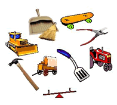
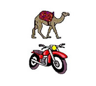
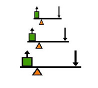
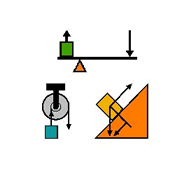
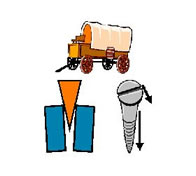

WHAT IS A SIMPLE MACHINE?
Click circles to reveal
A machine
is a device
that does
work

Machines
do not
increase the
work done,
but they
make it
easier

To
make work
easier machines
change the force
itself, its
distance, or its
direction

Here are
three simple
machines.
lever
pulley
inclined plane

Three
more simple
machines.
wheel & axle
screw
wedge

A complex
machine is
made up of two
or more simple
machines